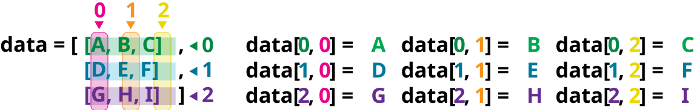
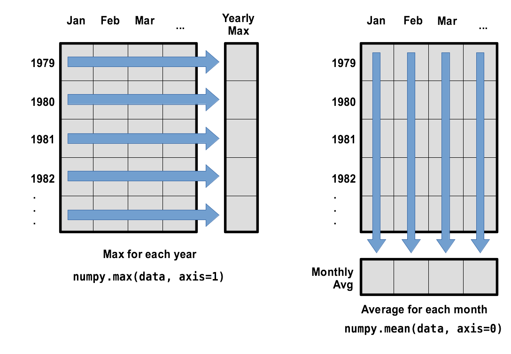

Analyzing some wave-height data
Last updated on 2026-01-13 | Edit this page
Overview
Questions
- “How can I process tabular data files in Python?”
Objectives
- “Explain what a library is and what libraries are used for.”
- “Import a Python library and use the functions it contains.”
- “Read tabular data from a file into a program.”
- “Select individual values and subsections from data.”
- “Perform operations on arrays of data.”
Words are useful, but what’s more useful are the sentences and stories we build with them. Similarly, while a lot of powerful, general tools are built into Python, specialized tools built up from these basic units live in libraries that can be called upon when needed.
Loading data into Python
To begin processing the wavedata, we need to load it into Python. We can do that using a library called NumPy, which stands for Numerical Python. In general, you should use this library when you want to do fancy things with lots of numbers, especially if you have matrices or arrays. To tell Python that we’d like to start using NumPy, we need to import it:
Importing a library is like getting a piece of lab equipment out of a storage locker and setting it up on the bench. Libraries provide additional functionality to the basic Python package, much like a new piece of equipment adds functionality to a lab space. Just like in the lab, importing too many libraries can sometimes complicate and slow down your programs - so we only import what we need for each program.
Once we’ve imported the library, we can ask the library to read our data file for us:
OUTPUT
array([[1.979e+03, 1.000e+00, 3.788e+00],
[1.979e+03, 2.000e+00, 3.768e+00],
[1.979e+03, 3.000e+00, 4.774e+00],
...,
[2.015e+03, 1.000e+01, 3.046e+00],
[2.015e+03, 1.100e+01, 4.622e+00],
[2.015e+03, 1.200e+01, 5.048e+00]], shape=(444, 3))The expression numpy.loadtxt(...) is a function call that asks Python
to run the function
loadtxt which belongs to the numpy library.
The dot notation in Python is used most of all as an object
attribute/property specifier or for invoking its method.
object.property will give you the object.property value,
object_name.method() will invoke on object_name method.
As an example, John Smith is the John that belongs to the Smith
family. We could use the dot notation to write his name
smith.john, just as loadtxt is a function that
belongs to the numpy library.
numpy.loadtxt has two parameters: the name of the file we
want to read and the delimiter
that separates values on a line. These both need to be character strings
(or strings for short), so we put
them in quotes. Notice that we also had to tell NumPy to skip the first
row, which contains the column titles.
Since we haven’t told it to do anything else with the function’s
output, the notebook displays it.
In this case, that output is the data we just loaded. By default, only a
few rows and columns are shown (with ... to omit elements
when displaying big arrays). Note that, to save space when displaying
NumPy arrays, Python does not show us trailing zeros, so
1.0 becomes 1..
Our call to numpy.loadtxt read our file but didn’t save
the data in memory. To do that, we need to assign the array to a
variable. In a similar manner to how we assign a single value to a
variable, we can also assign an array of values to a variable using the
same syntax. Let’s re-run numpy.loadtxt and save the
returned data:
This statement doesn’t produce any output because we’ve assigned the
output to the variable data. If we want to check that the
data have been loaded, we can print the variable’s value:
OUTPUT
[[1.979e+03 1.000e+00 3.788e+00]
[1.979e+03 2.000e+00 3.768e+00]
[1.979e+03 3.000e+00 4.774e+00]
...
[2.015e+03 1.000e+01 3.046e+00]
[2.015e+03 1.100e+01 4.622e+00]
[2.015e+03 1.200e+01 5.048e+00]]Now that the data are in memory, we can manipulate them. First, let’s
ask what type of thing
data refers to:
OUTPUT
<class 'numpy.ndarray'>The output tells us that data currently refers to an
N-dimensional array, the functionality for which is provided by the
NumPy library. These data correspond to sea wave height. Each row is a
monthly average, and the columns are their associated dates and
values.
Data Type
A Numpy array contains one or more elements of the same type. The
type function will only tell you that a variable is a NumPy
array but won’t tell you the type of thing inside the array. We can find
out the type of the data contained in the NumPy array.
OUTPUT
float64This tells us that the NumPy array’s elements are floating-point numbers.
With the following command, we can see the array’s shape:
OUTPUT
(444, 3)The output tells us that the data array variable
contains 444 rows (sanity check: 37 years of 12 months = 37 * 12 = 444)
and 3 columns (year, month, and datapoint). When we created the variable
data to store our wave data, we did not only create the
array; we also created information about the array, called members or attributes. This extra
information describes data in the same way an adjective
describes a noun. data.shape is an attribute of
data which describes the dimensions of data.
We use the same dotted notation for the attributes of variables that we
use for the functions in libraries because they have the same
part-and-whole relationship.
If we want to get a single number from the array, we must provide an index in square brackets after the variable name, just as we do in math when referring to an element of a matrix. Our wave data has two dimensions, so we will need to use two indices to refer to one specific value:
OUTPUT
first value in data: 3.788OUTPUT
middle value in data: 2.446The expression data[222, 2] accesses the element on the
223rd row and 3rd column. While this expression may not surprise you,
using data[0, 2] to get the 3rd column in the
1st row might. Programming languages like Fortran, MATLAB and R
start counting at 1 because that’s what human beings have done for
thousands of years. Languages in the C family (including C++, Java,
Perl, and Python) count from 0 because it represents an offset from the
first value in the array (the second value is offset by one index from
the first value). This is closer to the way that computers represent
arrays (if you are interested in the historical reasons behind counting
indices from zero, you can read Mike
Hoye’s blog post). As a result, if we have an M×N array in Python,
its indices go from 0 to M-1 on the first axis and 0 to N-1 on the
second. It takes a bit of getting used to, but one way to remember the
rule is that the index is how many steps we have to take from the start
to get the item we want.

In the Corner
What may also surprise you is that when Python displays an array, it
shows the element with index [0, 0] in the upper left
corner rather than the lower left. This is consistent with the way
mathematicians draw matrices but different from the Cartesian
coordinates. The indices are (row, column) instead of (column, row) for
the same reason, which can be confusing when plotting data.
Slicing data
An index like [222, 2] selects a single element of an
array, but we can select whole sections as well. For example, we can
select the wavedata for the first year like this:
OUTPUT
[[1.979e+03 1.000e+00 3.788e+00]
[1.979e+03 2.000e+00 3.768e+00]
[1.979e+03 3.000e+00 4.774e+00]
[1.979e+03 4.000e+00 2.818e+00]
[1.979e+03 5.000e+00 2.734e+00]
[1.979e+03 6.000e+00 2.086e+00]
[1.979e+03 7.000e+00 2.066e+00]
[1.979e+03 8.000e+00 2.236e+00]
[1.979e+03 9.000e+00 3.322e+00]
[1.979e+03 1.000e+01 3.512e+00]
[1.979e+03 1.100e+01 4.348e+00]
[1.979e+03 1.200e+01 4.628e+00]]The slice 0:12 means,
“Start at index 0 and go up to, but not including, index 12”. Again, the
up-to-but-not-including takes a bit of getting used to, but the rule is
that the difference between the upper and lower bounds is the number of
values in the slice.
We don’t have to start slices at 0:
OUTPUT
[[ 1. 3.666]
[ 2. 4.326]
[ 3. 3.522]
[ 4. 3.18 ]
[ 5. 1.954]
[ 6. 1.72 ]
[ 7. 1.86 ]
[ 8. 1.95 ]
[ 9. 3.11 ]
[10. 3.78 ]
[11. 3.474]
[12. 5.28 ]]We also don’t have to include the upper and lower bound on the slice. If we don’t include the lower bound, Python uses 0 by default; if we don’t include the upper, the slice runs to the end of the axis, and if we don’t include either (i.e., if we use ‘:’ on its own), the slice includes everything:
The above example selects rows 0 through 11 and columns 2 through to the end of the array (which in this case is only the last column).
OUTPUT
data from first year is:
[[3.788]
[3.768]
[4.774]
[2.818]
[2.734]
[2.086]
[2.066]
[2.236]
[3.322]
[3.512]
[4.348]
[4.628]]Slicing Strings
A section of an array is called a slice. We can take slices of character strings as well:
PYTHON
element = 'oxygen'
print('first three characters:', element[0:3])
print('last three characters:', element[3:6])OUTPUT
first three characters: oxy
last three characters: genWhat is the value of element[:4]? What about
element[4:]? Or element[:]?
OUTPUT
oxyg
en
oxygenSlicing Strings (continued)
What is element[-1]? What is
element[-2]?
OUTPUT
n
eSlicing Strings (continued)
Given those answers, explain what element[1:-1]
does.
Creates a substring from index 1 up to (not including) the final index, effectively removing the first and last letters from ‘oxygen’
Slicing Strings (continued)
How can we rewrite the slice for getting the last three characters of
element, so that it works even if we assign a different
string to element? Test your solution with the following
strings: carpentry, clone,
hi.
PYTHON
element = 'oxygen'
print('last three characters:', element[-3:])
element = 'carpentry'
print('last three characters:', element[-3:])
element = 'clone'
print('last three characters:', element[-3:])
element = 'hi'
print('last three characters:', element[-3:])OUTPUT
last three characters: gen
last three characters: try
last three characters: one
last three characters: hiThin Slices
The expression element[3:3] produces an empty string, i.e., a string that
contains no characters. If data holds our array of wave
data, what does data[3:3, 4:4] produce? What about
data[3:3, :]?
Analyzing data
NumPy has several useful functions that take an array as input to
perform operations on its values. If we want to find the average wave
height for all months on all years, for example, we can ask NumPy to
compute data’s mean value:
OUTPUT
668.9611876876877mean is a function
that takes an array as an argument. Given that our array
contains the dates as well as data, with numbers relating to years and
months, taking the mean of the whole array doesn’t really make much
sense - we don’t expect to see 600 metre high waves!
We can use slicing to calculate the correct mean:
OUTPUT
3.383563063063063Not All Functions Have Input
Generally, a function uses inputs to produce outputs. However, some functions produce outputs without needing any input. For example, checking the current time doesn’t require any input.
OUTPUT
Sat Mar 26 13:07:33 2016For functions that don’t take in any arguments, we still need
parentheses (()) to tell Python to go and do something for
us.
Let’s use three other NumPy functions to get some descriptive values about the wave heights. We’ll also use multiple assignment, a convenient Python feature that will enable us to do this all in one line.
PYTHON
maxval, minval, stdval = numpy.max(data[:,2]), numpy.min(data[:,2]), numpy.std(data[:,2])
print('Max wave height:', maxval)
print('Min wave height:', minval)
print('Wave height standard deviation:', stdval)Here we’ve assigned the return value from
numpy.max(data[:,2]) to the variable maxval,
the value from numpy.min(data[:,2]) to minval,
and so on. Note that we used maxval, rather than just
max - it’s not good practice to use variable names that are
the same as Python
keywords or fuction names.
OUTPUT
Max wave height: 6.956
Min wave height: 1.496
Wave height standard deviation: 1.1440155050316319Getting help on functions
How did we know what functions NumPy has and how to use them? If you
are working in IPython or in a Jupyter Notebook, there is an easy way to
find out. If you type the name of something followed by a dot, then you
can use tab completion
(e.g. type numpy. and then press Tab) to see a
list of all functions and attributes that you can use. After selecting
one, you can also add a question mark
(e.g. numpy.cumprod?), and IPython will return an
explanation of the method! This is the same as doing
help(numpy.cumprod). Similarly, if you are using the “plain
vanilla” Python interpreter, you can type numpy. and press
the Tab key twice for a listing of what is available. You can
then use the help() function to see an explanation of the
function you’re interested in, for example:
help(numpy.cumprod).
What about NaNs?
In real datasets, particularly ones which come from observational data, it’s quite common for some values to be missing. There are various strategies to deal with missing values; one of which is to give them a value that would be clearly wrong (e.g. -1 for a temperature column with units in Kelvin, or 999 for a missing latitude or longitude value). However, the issue with this is that we would need to check for these values before calculating any summary statistic.
Instead, we can use NumPy’s nan (“not a number”) value,
which will tell NumPy that these are values that need to be dealt with
in a special manner. NumPy also provides various functions to help deal
with NaNs.
Beware the NumPy version 1.x used NaN and numpy version
2.x uses nan, this course assumes you have Numpy version
2.x installed and will use that convention.
However, we can’t use NumPy’s normal statistical functions on any array that contains a NaN, as this returns a NaN:
Instead, we need to use the NumPy function nanmean:
If, at a later date, we’d like to replace all the NaNs with a sensible numerical value (e.g. the mean of the column), NumPy also provides functions that can help with this
What happens if the shape of the data is not convenient for
us to do some of our analysis? With this waveheight dataset, the data is
a time-series, but it’s not very easy to calculate things like average
monthly temperature. To do that, we’ll need to reshape it.
Numpy allows us to do that relatively easily:
PYTHON
reshaped_data = numpy.reshape(data[:,2], [37,12]) # reshape the data to form a 2D array of year by monthWe now have a 2D array of data using, where each row is a year, and each column represents a month:
OUTPUT
The shape of the reshaped data is:
(37, 12)We can verify that nothing about the data has changed:
PYTHON
print(f"The maximum value of the reshaped data is: {numpy.max(reshaped_data)}")
print(f"The minimum value of the reshaped data is: {numpy.min(reshaped_data)}")
print(f"The standard deviation of the reshaped data is: {numpy.std(reshaped_data)}")OUTPUT
The maximum value of the reshaped data is: 6.956
The minimum value of the reshaped data is: 1.496
The standard deviation of the reshaped data is: 1.1440155050316319We can now look variations in some summary statistics, such as the maximum wave height per month, or average height per year more easily. One way to do this is to create a new temporary array of the data we want, then ask it to do the calculation:
PYTHON
year_0 = reshaped_data[0,:] # 0 on the first axis (rows), everything on the second (columns)
print(f"maximum wave height for year 0: {numpy.max(year_0)}")OUTPUT
maximum wave height for year 0: 4.774What if we need the maximum wave height for each month over all years (as in the next diagram on the left) or the average for each month (as in the diagram on the right)? As the diagram below shows, we want to perform the operation across an axis:

To support this functionality, most array functions allow us to specify the axis we want to work on. If we ask for the average across axis 0 (rows in our 2D example), we get:
OUTPUT
[4.59956757 4.39708108 4.09156757 3.26016216 2.60437838 2.3072973
2.18940541 2.32145946 2.9907027 3.55627027 3.90345946 4.38140541]As a quick check, we can ask this array what its shape is:
OUTPUT
(12,)The expression (12,) tells us we have an N×1 vector, so
this is the average wave height per month for all years. If we average
across axis 1 (columns in our 2D example), we get:
OUTPUT
[3.34 3.15183333 3.29866667 3.53366667 3.448 3.23016667
2.99383333 3.51133333 2.96066667 3.20316667 3.62116667 5.1915
3.28816667 3.529 3.523 3.66866667 3.314 2.99916667
3.45983333 3.16783333 3.413 3.3435 3.031 3.29366667
3.138 3.29716667 3.3185 3.24966667 3.4135 3.42866667
3.168 2.78816667 3.61366667 3.2725 3.32766667 3.2765
4.385 ]which is the average wave height per year across all months.
Saving Data
There are occasions though the rest of the lesson when we will want to use the reshaped data. If we close this Notebook, we’ll lose the variables we’ve created, so let’s save the reshaped data to a file:
Stacking Arrays
Arrays can be concatenated and stacked on top of one another, using
NumPy’s vstack and hstack functions for
vertical and horizontal stacking, respectively.
PYTHON
A = numpy.array([[1,2,3], [4,5,6], [7, 8, 9]])
print('A = ')
print(A)
>
B = numpy.hstack([A, A])
print('B = ')
print(B)
>
C = numpy.vstack([A, A])
print('C = ')
print(C)OUTPUT
A =
[[1 2 3]
[4 5 6]
[7 8 9]]
B =
[[1 2 3 1 2 3]
[4 5 6 4 5 6]
[7 8 9 7 8 9]]
C =
[[1 2 3]
[4 5 6]
[7 8 9]
[1 2 3]
[4 5 6]
[7 8 9]]Write some additional code that slices the first and last columns of
A, and stacks them into a 3x2 array. Make sure to
print the results to verify your solution.
A ‘gotcha’ with array indexing is that singleton dimensions are
dropped by default. That means A[:, 0] is a one dimensional
array, which won’t stack as desired. To preserve singleton dimensions,
the index itself can be a slice or array. For example,
A[:, :1] returns a two dimensional array with one singleton
dimension (i.e. a column vector).
OUTPUT
D =
[[1 3]
[4 6]
[7 9]]Change In Wave Height
In the wave data, one row represents a series of monthly data relating to one year. This means that the change in height over time is a meaningful concept representing seasonal changes. Let’s find out how to calculate changes in the data contained in an array with NumPy.
The numpy.diff() function takes an array and returns the
differences between two successive values. Let’s use it to examine the
changes each day across the first 6 months of waves in year 4 from our
dataset.
OUTPUT
[3.73 4.886 4.76 3.188 2.528 1.662 1.952 2.388 3.336 4.034 4.502 5.438]Calling numpy.diff(year4) would do the following
calculations
OUTPUT
[ 4.886 - 3.73, 4.76 - 4.886, 3.188 - 4.76, 2.528 - 3.188, 1.662 - 2.528, 1.952 - 1.662, 2.388 - 1.952, 3.336 - 2.388, 4.034 - 3.336, 4.502 - 4.034, 5.438 - 4.502 ]and return the 11 difference values in a new array.
OUTPUT
[ 1.156 -0.126 -1.572 -0.66 -0.866 0.29 0.436 0.948 0.698 0.468
0.936]Note that the array of differences is shorter by one element (length 11). Where we see a negative change in wave height, it shows that the sea is becoming calmer as we move towards the summer. Positive wave heights in the autumn show waves are increasing.
If the shape of an individual data file is (60, 40) (60
rows and 40 columns), what would the shape of the array be after you run
the diff() function and why?
The shape will be (60, 39) because there is one fewer
difference between columns than there are columns in the data. {:
.solution}
How would you find the largest change in wave height from month to month within each year? What does it mean if the change in height is an increase or a decrease?
By using the numpy.max() function after you apply the
numpy.diff() function, you will get the largest difference
between months.
OUTPUT
array([1.086, 1.806, 1.776, 1.156, 1.692, 1.274, 0.798, 2.59 , 1.338,
1.634, 0.992, 0.618, 1.054, 1.652, 1.472, 1.716, 0.766, 1.496,
1.656, 1.04 , 1.228, 1.336, 1.564, 1.066, 1.242, 1.604, 0.802,
1.04 , 0.652, 0.86 , 1.176, 0.97 , 1.68 , 1.556, 1.904, 2.936,
1.578])If wave height values decrease along an axis, then the
difference from one element to the next will be negative. If you are
interested in the magnitude of the change and not the
direction, the numpy.absolute() function will provide
that.
Notice the difference if you get the largest absolute difference between readings.
OUTPUT
array([1.956, 1.806, 1.776, 1.572, 3.6 , 2.418, 0.954, 2.798, 1.338,
1.634, 2.13 , 0.93 , 1.054, 1.71 , 1.68 , 2. , 1.614, 1.496,
2.308, 1.04 , 2.014, 1.68 , 1.564, 1.596, 1.528, 1.604, 1.468,
1.21 , 1.012, 0.86 , 1.732, 1.03 , 1.68 , 1.774, 1.904, 2.936,
1.694])- “Import a library into a program using
import libraryname.” - “Use the
numpylibrary to work with arrays in Python.” - “The expression
array.shapegives the shape of an array.” - “Use
array[x, y]to select a single element from a 2D array.” - “Array indices start at 0, not 1.”
- “Use
low:highto specify aslicethat includes the indices fromlowtohigh-1.” - “Use
# some kind of explanationto add comments to programs.” - “Use
numpy.mean(array),numpy.max(array), andnumpy.min(array)to calculate simple statistics.” - “Use
numpy.mean(array, axis=0)ornumpy.mean(array, axis=1)to calculate statistics across the specified axis.”